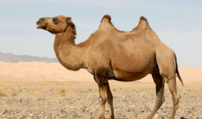

CamelA camel is an even-toed ungulate in the genus Camelus that bears distinctive fatty deposits known as "humps" on its back. Camels have long been domesticated and, as livestock, they provide food (milk and meat) and textiles (fiber and felt from hair). Camels are working animalsespecially suited to their desert habitat and are a vital means of transport for passengers and cargo. |
 |